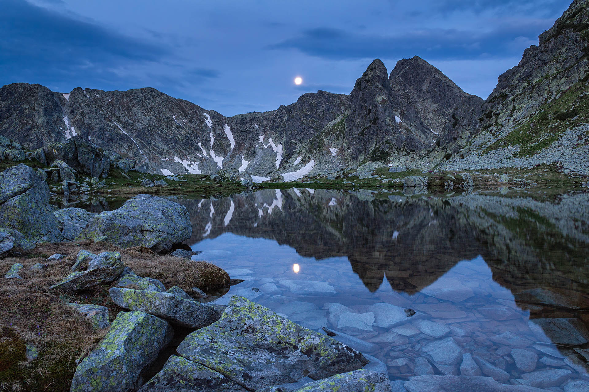
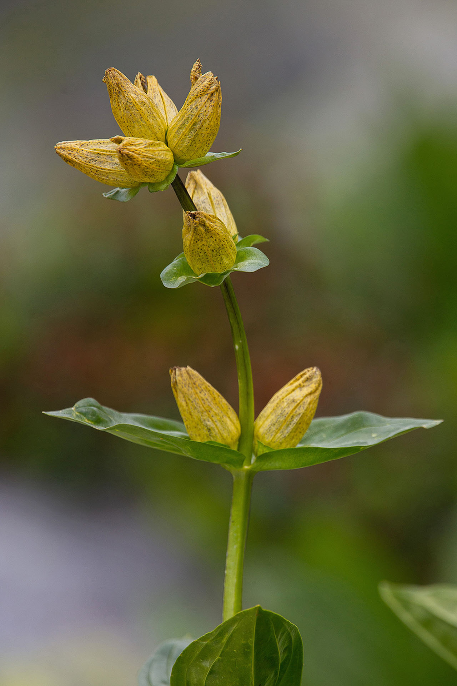
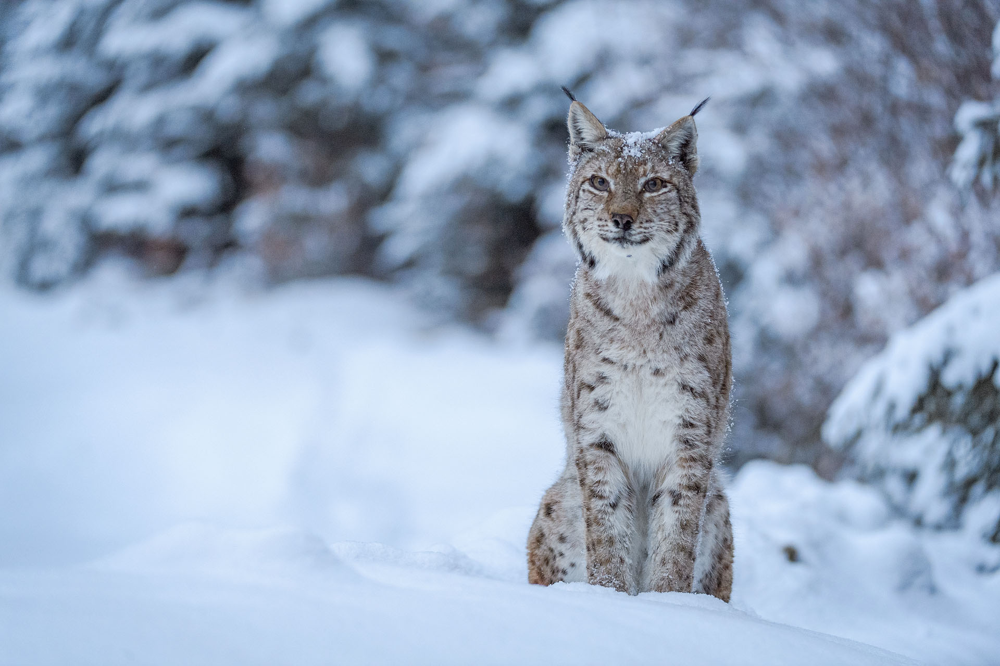
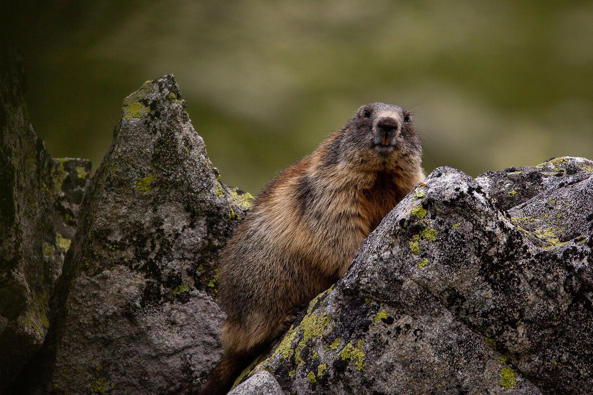
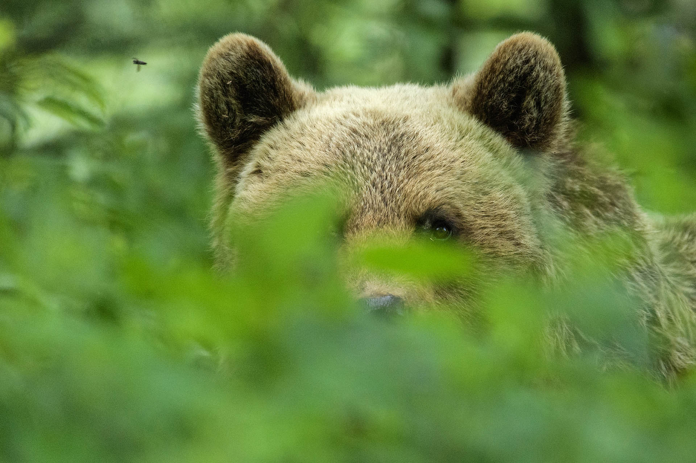

Retezat
...primul parc national al Romaniei
Munții Retezat impresionează prin grandoare și masivitate, prin prezența celor 50 de vârfuri cu înălțimi de peste 2.000 m, a pădurilor virgine și a pășunilor alpine de o frumusețe aparte. Decorul din primul parc național al României este completat de o multitudine de lacuri glaciare și de o biodiversitate aparte.INTRODUCERE
- Parcul Național Retezat a fost înființat în anul 1935 la iniţiativa lui Alexandru Borza, fondatorul Grădinii Botanice din Cluj, şi a biologului Emil Racoviţă, fiind primul parc național al României. În 1979 câteva suprafețe ale parcului devin Rezervație a Biosferei, prima de acest fel din țară. Programul „Omul și Biosfera” are condiții clare de acceptare, iar Retezatul nu îndeplinea în totalitate aceste criterii la momentul aderării, fapt pentru care s-a suspendat și se reevaluează acest statut.
- Parcul Național Retezat are o suprafață de peste 38.000 de hectare și face parte din regiunea biogeografică alpină, fiind situat în vestul Carpaților Meridionali, pe raza județelor Hunedoara, Caraș - Severin și Gorj. Pădurile acoperă peste 50% din suprafața parcului, iar dintre acestea aproximativ 20% sunt păduri virgine și cvasivirgine. Cel mai înalt vârf din Retezat este Peleaga (2.509 m). Parcul Național Retezat este renumit pentru cele peste 80 de lacuri glaciare, aproape 40% din totalul lacurilor de acest fel din România. 54 dintre acestea sunt permanente și sunt alimentate de zăpada topită de pe crestele munților și de mici izvoare. Cele mai spectaculoase dintre lacuri sunt: Bucura, Zănoaga, Ana, Lia, Tăul Negru, Tăul Porții, Gemenele sau Știrbu. Cel mai mare lac glaciar din țară este Bucura, cel mai adânc este Zănoaga, iar Tăul Porții este lacul aflat la cea mai mare altitudine din Retezat.

Taul Portii
FLORA
- În Retezat întâlnim aproape 1.200 de specii de plante, ce reprezintă aproximativ o treime din totalul plantelor din țara noastră. 90 de specii sunt endemice zonei, ceea ce înseamnă ca nu se regăsesc în alt loc în afara Retezatului. Prima plantă endemică semnalată aici, încă din 1858, este flămânzica. Dintre cele mai importante specii de flori amintim: sângele voinicului, bujorul de munte, ghinţura galbenă, sisinelul de munte, talpa ursului, papucul doamnei și floarea de colț.
- Zona calcaroasă din Retezatul Mic este deosebit de importantă din punct de vedere floristic deoarece găzduiește un număr mare de plante rare sau endemice. În pajiștile din regiunea alpină se regăsesc majoritatea speciilor din flora specifică acestei zone. La limita dintre aceste pajiști și zonele de stâncărie se pot întâlni bujorul de munte și jneapănul. O altă apariție inedită este zâmbrul, o specie de conifer relict glaciar, care apare în Retezat în număr mai mare și în grupuri mai compacte decât în alte masive din țară.

Gentiana punctata
FAUNA
- În arealul parcului au fost inventariate mai bine de 100 de specii de păsări, un sfert din totalul din România, 55 de specii de mamifere (peste 50% din speciile întâlnite în țara noastră, dintre care 22 sunt protejate), 8 specii de peşti, 5 specii de reptile și 7 specii de amfibieni.
- Alte animale ce se regăsesc într-un număr impresionant în zonă sunt nevertebratele, dintre care nu mai puțin de 1.100 de specii de fluturi au fost studiați aici. Lunca Berhina a fost declarată Arie de Importanță Lepidopterologică Europeană pentru relevanța pe care o are în conservarea fluturilor.

Ras
- În anul 1973, au fost introduse în căldarea lacului Gemenele, 20 de marmote provenite din Alpii Austrieci. În prezent, aproape 400 de exemplare se pot întâlni în toate văile și căldările glaciare de sub Șaua Custurii și până în căldarea lacului Zănoaga.
- Mamiferele identificate până în prezent în Parcul Național Retezat, în număr de 55 de specii, reprezintă peste 23% din mamiferele terestre ale Europei, ceea ce arată încă o dată diversitatea habitatelor naturale prezente aici. Parcul oferă condiții pentru supraviețuirea celor mai importante dintre carnivorele mari europene: lupul (Canis lupus), ursul (Ursus arctos) şi râsul (Lynx lynx).

Marmota

Urs brun